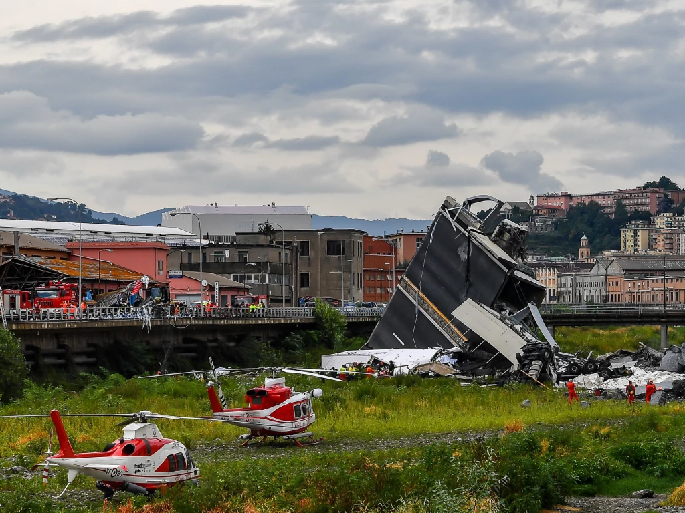
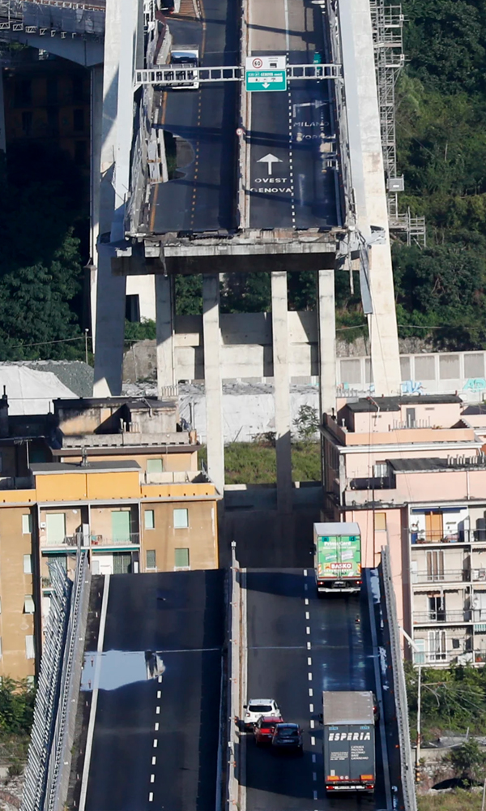
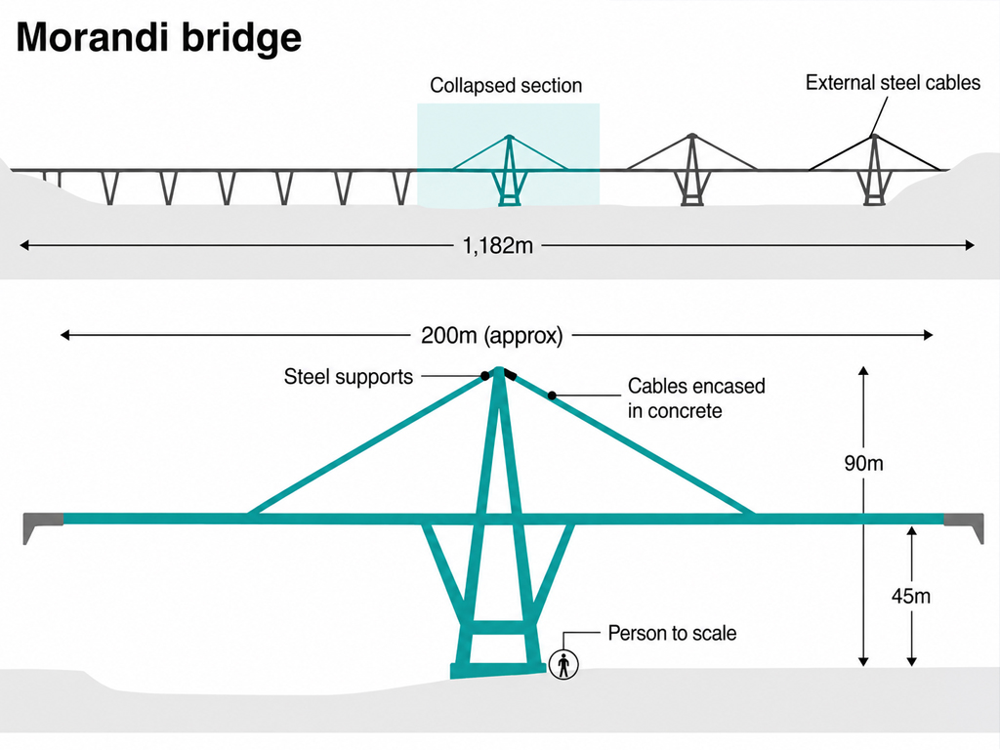
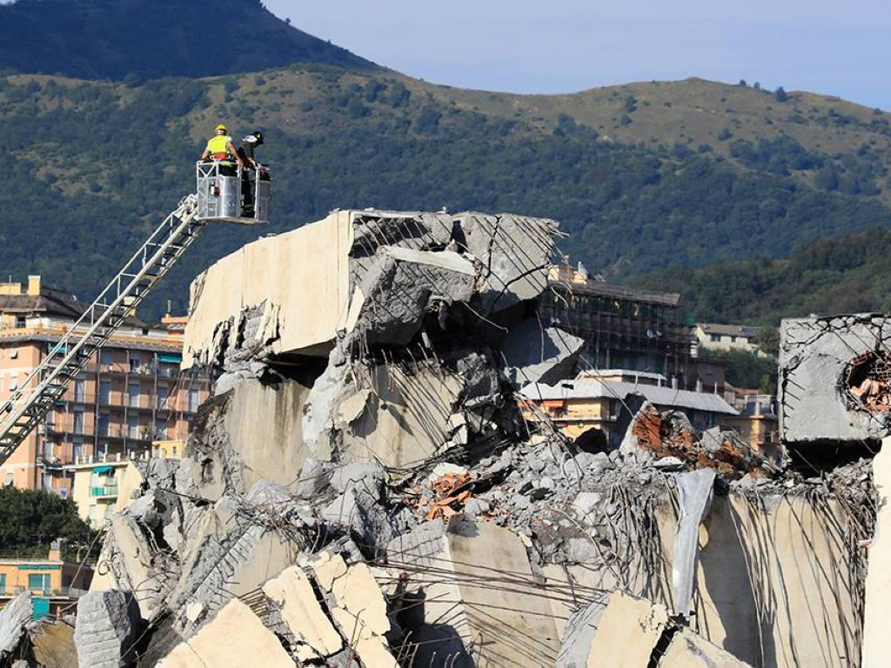
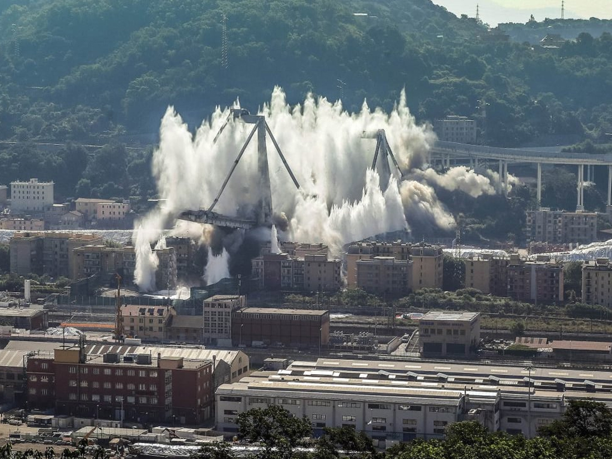
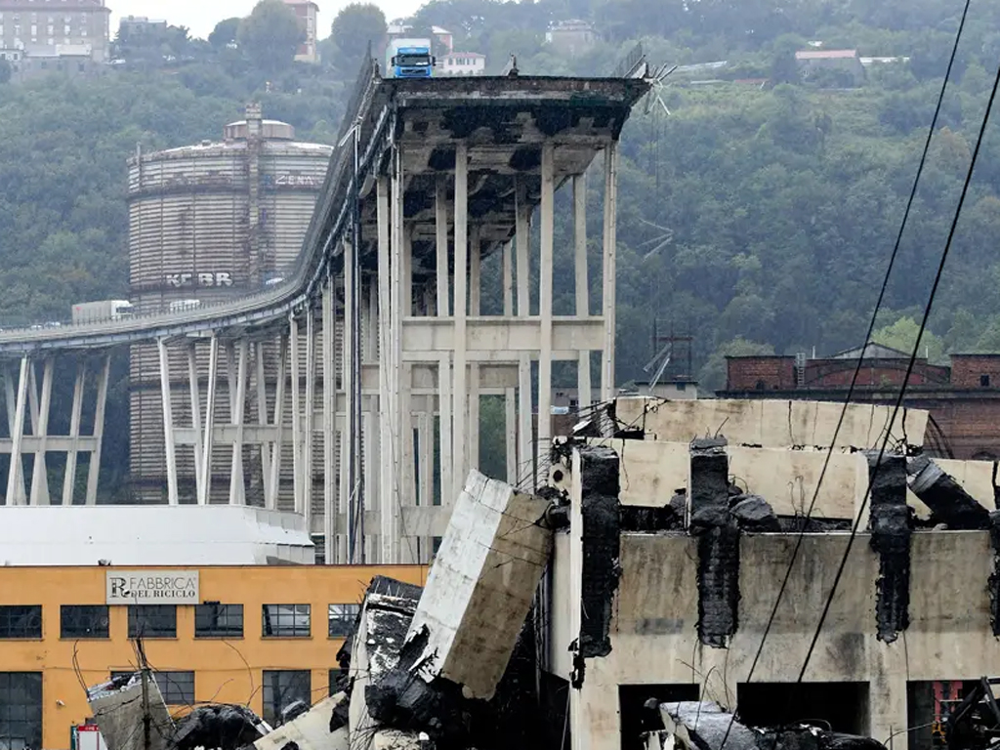
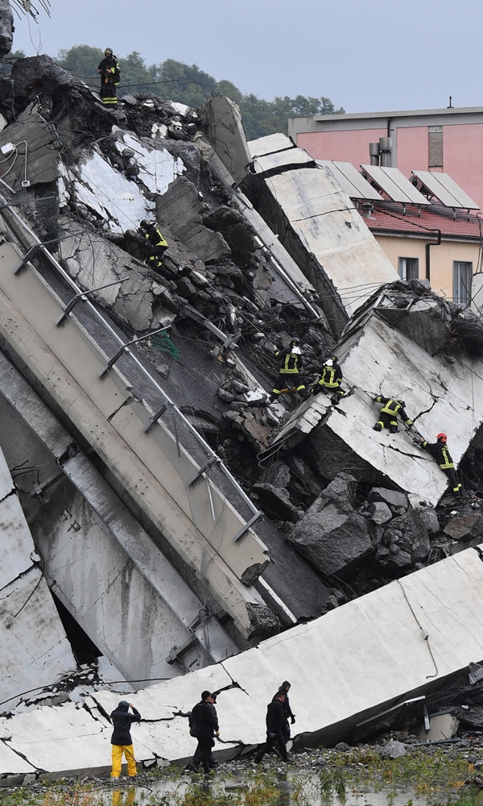

MORANDI BRIDGE COLLAPSE 2018
Riccardo Morandi loved the poetry of concrete so he wanted to make a bridge where concrete was all you saw.
The metal was encased in concrete.
The collapse of the Morandi Bridge in Genoa, Italy in 2018, represents one of the most significant structural failures in recent European engineering history.
XXThe collapse of the Morandi Bridge in Genoa, Italy in 2018, represents one of the most significant structural failures in recent European engineering history.


BACKGROUND
Officially known as the Polcevera Viaduct, the bridge formed part of the A10 motorway and was designed by Italian engineer Riccardo Morandi.
Completed in 1967, the structure was notable for its innovative cable stay system, which became a central factor in its deterioration and ultimate failure.
Its collapse has taught crucial lessons about redundancy, inspection reliability and the importance of maintenance over a bridges life cycle.
The stays consisted of multiple steel tendons embedded within prestressed concrete sheaths.
This hybrid system reflected Morandi’s belief that concrete could both protect and strengthen steel tendons.
“At a certain point they did an inspection of the bridge and a piece of concrete came away and revealed a hole. Inside you could see the steel falling to pieces.”
- Professor Carmelo Gentile
CONCERNS
Morandi employed prestressed concrete encased stay-cables, a distinctive design choice that aimed to minimise corrosion.
Unlike conventional cable stay bridges where the cables are exposed and easily inspectable, Morandi’s design concealed bundles of steel cables within large prestressed concrete “sheaths”.
Over time, several engineers raised concerns that this unique cable system was inherently vulnerable to chloride attack, corrosion and creep within the concrete casing.
By the early 1990s, significant maintenance interventions were already required.

MAINTENANCE
One of the three main pylons (Pylon 11) was strengthened between 1992 and 1994 due to accelerated cable degradation. Strengthening was achieved by adding external stay cables and increasing prestressing.
However, the other two pylons received only limited repairs. Investigatory documents later suggested that the degradation in these un-strengthened sections may have been more severe than originally anticipated.


COLLAPSE
A 210-metre section of the deck and the stays of Pylon 9 suddenly failed during heavy rainfall, causing vehicles and structural elements to fall 45 metres.
Forty-three people were killed. Subsequent forensic analysis concluded that corrosion of the stay cables within the concrete sheath was the primary cause.
Micro-cracks within the concrete permitted the ingress of chlorides, leading to progressive corrosion and a reduction in the steel cross-section.
As the cables weakened, their ability to carry tensile loads diminished until one or more stays ruptured.
CONTRIBUTING CONDITIONS
Reports also highlight that maintenance shortcomings, increased traffic loads far beyond those anticipated in the 1960s, and environmental conditions contributed to the bridge’s vulnerability.
Genoa’s industrial pollution, combined with marine air from the nearby Ligurian coast, created an aggressive environment for reinforced and prestressed concrete.
In addition, the bridge carried motorway traffic that had increased by several multiples since its original construction, placing higher stresses on already compromised elements.

INSPECTION AND AFTERMATH
Investigations conducted after the disaster found that inspections were hampered by the difficulty of accessing the enclosed stay cables.
Some sources argue that Morandi himself had warned of durability challenges in his concrete-encased stay designs, based on similar issues observed on his earlier bridges in Venezuela.
Despite these warnings, structural monitoring technologies and inspection regimes did not evolve sufficiently to detect the critical level of cable corrosion before failure occurred.
The Morandi Bridge collapse has since prompted a broader reassessment of ageing post-war concrete infrastructure, particularly structures employing non-standard or difficult-to-inspect systems.
It also emphasised the need for rigorous structural health monitoring, transparent maintenance practices, and timely interventions when original design assumptions no longer align with modern loading and environmental conditions.

LESSONS LEARNED
The Morandi Bridge lacked the level of redundancy found in modern cable-stayed structures. Using multiple stays per span allows a bridge to better withstand the loss or overstressing of a single cable due to load shifts, accidents or severe weather.
Lessons from past failures show that incorporating redundancy helps prevent a “domino effect,” where damage to one element triggers a chain reaction of failures in connected components.
ADVANTAGES
Cable-stayed bridges are efficient for medium-to-long spans because the stays directly support the deck, reducing bending and material use.
They can be built segmentally without extensive falsework. They also typically allow individual cable replacement for easier maintenance and their slender form reduses material usage and also provides strong visual appeal.
DESIGN ASPECTS
Design focuses on how the pylons, stay cables and concrete deck work together. The pylons carry major vertical and horizontal forces and help maintain the cable layout.
The stays are designed for tension, fatigue and vibration control, with protective sheathing and dampers. The deck is usually prestressed concrete sized for traffic loads and forces from the cables.